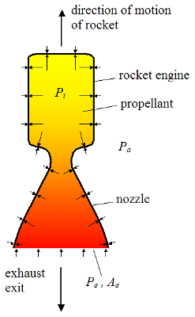

How thrust is generated

This is an attempt to simplify the concept of a rocket generating thrust. The arrows indicate
the force that is being generated in every direction (mostly) against the inner walls of the combustion chamber.
However, note the force exiting the combustion chamber via the nozzle. Because it is not exerting a force on the combustion
chamber, the force directly opposite it on the "upper" chamber is not countered. This unopposed force on the upper part of
the chamber is what gives the rocket lift. It is a classical example of Newtonian mechanics. However, this same concept can
be applied to engines that rely on ion propulsion. Essentially, a gas is given a magnetic charge and is driven out of the
nozzle at extremely high speeds via a magnet rather than combustion. We'll see an example later in the VASIMR engine.